가스기사 (2019-03-03 기출문제)
1과목: 가스유체역학
1. 수면의 높이가 10m 로 일정한 탱크의 바닥에 5mm 의 구멍이 났을 경우 이 구멍을 통한 유체의 유속은 얼마인가?
- 14 m/s
- 19.6 m/s
- 98 m/s
- 196 m/s
(정답률: 63%)

2. 레이놀즈수를 옳게 나타낸 것은?
- 점성력에 대한 관성력의 비
- 점성력에 대한 중력의 비
- 탄성력에 대한 압력의 비
- 표면장력에 대한 관성력의 비
(정답률: 83%)
3. 유체의 흐름에 관한 다음 설명 중 옳은 것을 모두 나타낸 것은?
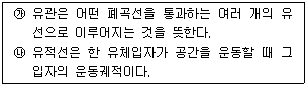
- ㉮
- ㉯
- ㉮, ㉯
- 모두 틀림
(정답률: 75%)
4. 이상기체 속에서의 음속을 옳게 나타낸 식은? (단, ρ = 밀도, P = 압력, k = 비열비,
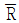
= 일반기체상수, M = 분자량 이다.)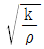
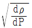
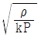
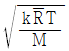
(정답률: 83%)
5. 절대압이 2kgf/cm2 이고, 40℃ 인 이상기체 2kg 이 가역과정으로 단열압축 되어 절대압 4 kgf/cm2 이 되었다. 최종온도는 약 몇 ℃ 인가? (단, 비열비 k 는 1.4 이다.)
- 43
- 64
- 85
- 109
(정답률: 59%)
6. 그림과 같은 확대 유로를 통하여 a 지점에서 b 지점으로 비압축성 유체가 흐른다. 정상상태에서 일어나는 현상에 대한 설명으로 옳은 것은?
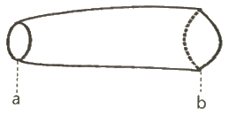
- a 지점에서의 평균속도가 b 지점에서의 평균속도보다 느리다.
- a 지점에서의 밀도가 b 지점에서 밀도보다 크다.
- a 지점에서의 질량플럭스(mass flux)가 b 지점에서의 질량플럭스보다 크다.
- a 지점에서의 질량유량이 b 지점에서의 질량유량보다 크다.
(정답률: 67%)
7. 깊이 1000 m 인 해저의 수압은 계기압력으로 몇 kgf/cm2 인가? (단, 해수의 비중량은 1025 kgf/m3 이다.)
- 100
- 102.5
- 1000
- 1025
(정답률: 73%)
8. 유체를 연속체로 가정할 수 있는 경우는?
- 유동 시스템의 특성길이가 분자평균자유행로에 비해 충분히 크고, 분자들 사이의 충돌시간은 충분히 짧은 경우
- 유동 시스템의 특성길이가 분자평균자유행로에 비해 충분히 작고, 분자들 사이의 충돌시간은 충분히 짧은 경우
- 유동 시스템의 특성길이가 분자평균자유행로에 비해 충분히 크고, 분자들 사이의 충돌시간은 충분히 긴 경우
- 유동 시스템의 특성길이가 분자평균자유행로에 비해 충분히 작고, 분자들 사이의 충돌시간은 충분히 긴 경우
(정답률: 64%)
9. 100 PS 는 약 몇 kW 인가?
- 7.36
- 7.46
- 73.6
- 74.6
(정답률: 63%)
10. 중력에 대한 관성력의 상대적인 크기와 관련된 무차원의 수는 무엇인가?
- Reynolds수
- Froude수
- 모세관수
- Weber수
(정답률: 66%)
11. 이상기체가 초음속으로 단면적이 줄어드는 노즐로 유입되어 흐를 때 감소하는 것은? (단, 유동은 등엔트로피 유동이다.)
- 온도
- 속도
- 밀도
- 압력
(정답률: 78%)
12. 비중이 0.9 인 액체가 나타내는 압력이 1.8 kgf/cm2 일 때 이것은 수두로 몇 m 높이에 해당하는가?
- 10
- 20
- 30
- 40
(정답률: 78%)
13. 수직으로 세워진 노즐에서 물이 10m/s 의 속도로 뿜어 올려진다. 마찰손실을 포함한 모든 손실이 무시된다면 물은 약 몇 m 높이까지 올라갈 수 있는가?
- 5.1 m
- 10.4 m
- 15.6 m
- 19.2 m
(정답률: 59%)
14. 그림과 같이 60° 기울어진 4m×8m의 수문이 A지점에서 힌지(inge)로 연결되어 있을 때, 이 수문에 작용하는 물에 의한 정수력의 크기는 약 몇 kN 인가?
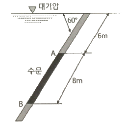
- 2.7
- 1568
- 2716
- 3136
(정답률: 46%)
15. 다음의 펌프 종류 중에서 터보형이 아닌 것은?
- 원심식
- 축류식
- 왕복식
- 경사류식
(정답률: 69%)
16. 압력 1.4 kgf/cm2abs, 온도 96℃의 공기가 속도 90 m/s로 흐를 때, 정체온도(K)는 얼마인가? (단, 공기의 CP = 0.24 kcal/kg·K 이다.)
- 397
- 382
- 373
- 369
(정답률: 32%)
17. 두 개의 무한히 큰 수평 평판 사이에 유체가 채워져 있다. 아래 평판을 고정하고 윗 평판을 V 의 일정한 속도로 움직일 때 평판에는 τ 의 전단응력이 발생한다. 평판 사이의 간격은 H 이고, 평판사이의 속도분포는 선형(Couette 유동)이라고 가정하여 유체의 점성계수 μ를 구하면?
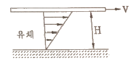
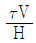
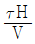
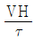
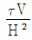
(정답률: 66%)
18. 온도 27℃의 이산화탄소 3kg이 체적 0.30m3의 용기에 가득 차 있을 때 용기 내의 압력(kgf/cm2)은? (단, 일반기체상수는 848kgf·m/kmol·K 이고, 이산화탄소의 분자량은 44 이다.)
- 5.79
- 24.3
- 100
- 270
(정답률: 62%)
19. 다음 유량계 중 용적형 유량계가 아닌 것은?
- 가스 미터(gas meter)
- 오벌 유량계
- 선회 피스톤형 유량계
- 로우터 미터
(정답률: 50%)
20. 내경이 0.⑤26 m 인 철관에 비압축성 유체가 9.085 m3/h 로 흐를 때의 평균유속은 약 몇 m/s 인가? (단, 유체의 밀도는 1200 kg/m3 이다.)
- 1.16
- 3.26
- 4.68
- 11.6
(정답률: 56%)
2과목: 연소공학
21. 어느 온도에서 A(g) + B(g) ⇄ C(g) + D(g)와 같은 가역반응이 평형상태에 도달하여 D가 1/4mol 생성되었다. 이 반응의 평형상수는? (단, A와 B를 각각 1mol씩 반응시켰다.)
- 16/9
- 1/3
- 1/9
- 1/16
(정답률: 63%)
22. 다음 중 폭발범위의 하한 값이 가장 낮은 것은?
- 메탄
- 아세틸렌
- 부탄
- 일산화탄소
(정답률: 55%)
23. 가연성가스와 공기를 혼합하였을 때 폭굉범위는 일반적으로 어떻게 되는가?
- 폭발범위와 동일한 값을 가진다.
- 가연성가스의 폭발상한계값보다 큰 값을 가진다.
- 가연성가스의 폭발하한계값보다 작은 값을 가진다.
- 가연성가스의 폭발하한계와 상한계값 사이에 존재한다.
(정답률: 73%)
24. 발열량이 24000kcal/m3인 LPG 1m3에 공기 3m3을 혼합하여 희석하였을 때 혼합기체 1m3 당 발열량은 몇 kcal 인가?
- 5000
- 6000
- 8000
- 16000
(정답률: 72%)
25. 연소 속도에 영향을 주는 요인으로서 가장 거리가 먼 것은?
- 산소와의 혼합비
- 반응계의 온도
- 발열량
- 촉매
(정답률: 64%)
26. 다음은 정압연소 사이클의 대표적인 브레이톤 사이클(Brayton cycle)의 T-S선도이다. 이 그림에 대한 설명으로 옳지 않은 것은?
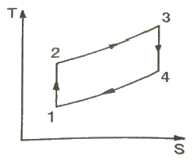
- 1-2의 과정은 가역단열압축 과정이다.
- 2-3의 과정은 가역정압가열 과정이다.
- 3-4의 과정은 가역정압팽창 과정이다.
- 4-1의 과정은 가역정압배기 과정이다.
(정답률: 61%)
27. 폭발범위에 대한 설명으로 틀린 것은?
- 일반적으로 폭발범위는 고압일수록 넓다.
- 일산화탄소는 공기와 혼합 시 고압이 되면 폭발범위가 좁아진다.
- 혼합가스의 폭발범위는 그 가스의 폭굉범위보다 좁다.
- 상온에 비해 온도가 높을수록 폭발범위가 넓다.
(정답률: 60%)
28. 열역학 제2법칙을 잘못 설명한 것은?
- 열은 공노에서 저온으로 흐른다.
- 전체 우주의 엔트로피는 감소하는 법이 없다.
- 일과 열은 전량 상호 변환할 수 있다.
- 외부로부터 일을 받으면 저온에서 고온으로 열을 이동시킬 수 있다.
(정답률: 58%)
29. 운전과 위험분석(HAZOP) 기법에서 변수의 양이나 질을 표현하는 간단한 용어는?
- Parameter
- Cause
- Consequence
- Guide Words
(정답률: 62%)
30. 연료에 고정 탄소가 많이 함유되어 있을 때 발생되는 현상으로 옳은 것은?
- 매연 발생이 많다.
- 발열량이 높아진다.
- 연소 효과가 나쁘다.
- 열손실을 초래한다.
(정답률: 71%)
31. 실제기체가 완전기체(ideal gas)에 가깝게 될 조건은?
- 압력이 높고, 온도가 낮을 때
- 압력, 온도 모두 낮을 때
- 압력이 낮고, 온도가 높을 때
- 압력, 온도 모두 높을 때
(정답률: 70%)
32. 다음 중 연소의 3요소로만 옳게 나열된 것은?
- 공기비, 산소농도, 점화원
- 가연성 물질, 산소공급원, 점화원
- 연료의 저열발열량, 공기비, 산소농도
- 인화점, 활성화에너지, 산소농도
(정답률: 84%)
33. 1atm, 15℃ 공기를 0.5atm 까지 단열팽창 시키면 그때 온도는 몇 ℃ 인가? (단, 공기의 CP/CV = 1.4 이다.)
- -18.7 ℃
- -20.5 ℃
- -28.5 ℃
- -36.7 ℃
(정답률: 53%)
34. 소화안전장치(화염감시장치)의 종류가 아닌 것은?
- 열전대식
- 플래임 로드식
- 자외선 광전관식
- 방사선식
(정답률: 63%)
35. 어떤 과정이 가역적으로 되기 위한 조건은?
- 마찰로 인한 에너지 변화가 있다.
- 외계로부터 열을 흡수 또는 방출한다.
- 작용 물체는 전 과정을 통하여 항상 평형이 이루어지지 않는다.
- 외부조건에 미소한 변화가 생기면 어느 지점에서라도 역전시킬 수 있다.
(정답률: 53%)
36. 프로판 20v%, 부탄 80v% 인 혼합가스 1L가 완전 연소하는데 필요한 산소는 약 몇 L 인가?
- 3.0 L
- 4.2 L
- 5.0 L
- 6.2 L
(정답률: 53%)
37. 공기의 확산에 의하여 반응하는 연소가 아닌 것은?
- 표면연소
- 분해연소
- 증발연소
- 확산연소
(정답률: 64%)
38. 프로판 가스 44kg을 완전연소시키는데 필요한 이론공기량은 약 몇 Nm3 인가?
- 460
- 530
- 570
- 610
(정답률: 61%)
39. 298.15K, 0.1MPa 상태의 일산화탄소(CO)를 같은 온도의 이론공기량으로 정상유동 과정으로 연소시킬 때 생성물의 단열화염 온도를 주어진 표를 이용하여 구하면 약 몇 K 인가? (단, 이 조건에서 CO 및 CO2의 생성엔탈피는 각각 –11⑤29 kJ/kmol, -393522 kJ/kmol 이다.)
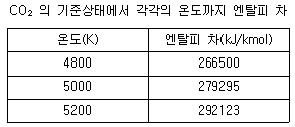
- 4835
- 5⑤8
- 5194
- 5293
(정답률: 48%)
40. 발열량에 대한 설명으로 틀린 것은?
- 연료의 발열량은 연료단위량이 완전 연소했을 때 발생한 열량이다.
- 발열량에는 고위발열량과 저위발열량이 있다.
- 저위발열량은 고위발열량에서 수증기의 잠열을 뺀 발열량이다.
- 발열량은 열량계로는 측정할 수 없어 계산식을 이용한다.
(정답률: 79%)
3과목: 가스설비
41. 접촉분해(수증기 개질)에서 카본생성을 방지하는 방법으로 알맞은 것은?
- 고온, 고압, 고수증기
- 고온, 저압, 고수증기
- 고온, 고압, 저수증기
- 저온, 저압, 저수증기
(정답률: 69%)
42. 금속의 표면 결함을 탐지하는데 주로 사용되는 비파괴검사법은?
- 초음파 탐상법
- 방사선 투과시험법
- 중성자 투과시험법
- 침투 탐상법
(정답률: 54%)
43. 부탄가스 공급 또는 이송 시 가스 재액화 현상에 대한 대비가 필요한 방법(식)은?
- 공기 혼합 공급 방식
- 액송 펌프를 이용한 이송법
- 압축기를 이용한 이송법
- 변성 가스 공급방식
(정답률: 64%)
44. 탄소강에 자경성을 주며 이 성분을 다량으로 첨가한 강은 공기 중에서 냉각하여도 쉽게 오스테나이트 조직으로 된다. 이 성분은?
- Ni
- Mn
- Cr
- Si
(정답률: 51%)
45. 배관이 열팽창할 경우 응력이 경감되도록 미리 늘어날 여유를 두는 것을 무엇이라 하는가?
- 루핑
- 핫 멜팅
- 콜드 스프링
- 팩레싱
(정답률: 64%)
46. 기어 펌프는 어느 형식의 펌프에 해당하는가?
- 축류펌프
- 원심펌프
- 왕복식펌프
- 회전펌프
(정답률: 64%)
47. 냉동 능력에서 1RT를 kcal/h로 환산하면?
- 1660 kcal/h
- 3320 kcal/h
- 39840 kcal/h
- 79680 kcal/h
(정답률: 74%)
48. LPG 압력조정기 중 1단 감압식 준저압 조정기의 조정압력은?
- 2.3 ~ 3.3 kPa
- 2.55 ~ 3.3 kPa
- 57.0 ~ 83 kPa
- 5.0 ~ 30.0 kPa 이내에서 제조자가 설정한 기준압력의 ± 20%
(정답률: 49%)
49. 가스 중에 포화수분이 있거나 가스배관의 부식구멍 등에서 지하수가 침입 또는 공사 중에 물이 침입하는 경우를 대비해 관로의 저부에 설치하는 것은?
- 에어밸브
- 수취기
- 콕
- 체크밸브
(정답률: 70%)
50. 도시가스설비에 대한 전기방식(防蝕)의 방법이 아닌 것은?
- 희생양극법
- 외부전원법
- 배류법
- 압착전원법
(정답률: 69%)
51. 압력조정기를 설치하는 주된 목적은?
- 유량조절
- 발열량조절
- 가스의 유속조절
- 일정한 공급압력 유지
(정답률: 82%)
52. 고무호스가 노후되어 직경 1mm의 구멍이 뚫려 280 mmH2O의 압력으로 LP가스가 대기 중으로 2시간 유출되었을 때 분출된 가스의 양은 약 몇 L 인가? (단, 가스의 비중은 1.6 이다.)
- 140 L
- 238 L
- 348 L
- 672 L
(정답률: 57%)
53. 공기액화사이클 중 압축기에서 압축된 가스가 열교환기로 들어가 팽창기에서 일을 하면서 단열팽창하여 가스를 액화시키는 사이클은?
- 필립스의 액화사이클
- 캐스케이드 액화사이클
- 클라우드의 액화사이클
- 린데의 액화사이클
(정답률: 55%)
54. 터보 압축기에서 누출이 주로 생기는 부분에 해당되지 않는 것은?
- 임펠레 출구
- 다이어프램 부위
- 밸런스 피스톤 부분
- 축이 케이싱을 관통하는 부분
(정답률: 53%)
55. PE 배관의 매설 위치를 지상에서 탐지할 수 있는 로케팅와이어 전선의 굵기(mm2)로 맞는 것은?
- 3
- 4
- 5
- 6
(정답률: 48%)
56. 분자량이 큰 탄화수소를 원료로 10000 kcal/Nm3 정도의 고열량 가스를 제조하는 방법은?
- 부분연소 프로세스
- 사이클링식 접촉분해 프로세스
- 수소화분해 프로세스
- 열분해 프로세스
(정답률: 69%)
57. 전기방식시설의 유지관리를 위해 배관을 따라 전위측정용 터미널을 설치할 때 얼마 이내의 간격으로 하는가?
- 50m 이내
- 100m 이내
- 200m 이내
- 300m 이내
(정답률: 45%)
58. 고압가스 용접용기에 대한 내압검사 시 전증가량이 250 mL 일 때 이 용기가 내압시험에 합격하려면 영구증가량은 얼마 이하가 되어야 하는가?
- 12.5 mL
- 25.0 mL
- 37.5 mL
- 50.0 mL
(정답률: 73%)
59. 용접결함 중 접합부의 일부분이 녹지 않아 간극이 생긴 현상은?
- 용입불량
- 융합불량
- 언더컷
- 슬러그
(정답률: 60%)
60. 저압배관의 관경 결정(Pole 式)시 고려할 조건이 아닌 것은?
- 유량
- 배관길이
- 중력가속도
- 압력손실
(정답률: 68%)
4과목: 가스안전관리
61. 액화석유가스의 충전용기는 항상 몇 ℃ 이하로 유지하여야 하는가?
- 15 ℃
- 25 ℃
- 30 ℃
- 40 ℃
(정답률: 78%)
62. 차량에 고정된 탱크 운반차량의 운반기준 중 다음 ( ) 에 옳은 것은?
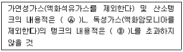
- Ⓐ 20000, Ⓑ 15000
- Ⓐ 20000, Ⓑ 10000
- Ⓐ 18000, Ⓑ 12000
- Ⓐ 16000, Ⓑ 14000
(정답률: 67%)
63. 고압가스 용기에 대한 설명으로 틀린 것은?
- 아세틸렌용기는 황색으로 도색하여야 한다.
- 압축가스를 충전하는 용기의 최고 충전압력은 TP로 표시한다.
- 신규검사 후 경과년수가 20년 이상인 용접용기는 1년 마다 재검사를 하여야 한다.
- 독성가스 용기의 그림문자는 흰색바탕에 검정색 해골모양으로 한다.
(정답률: 65%)
64. 아세틸렌을 용기에 충전할 때에는 미리 용기에 다공물질을 고루 채워야 하는데 이때 다공도는 몇 % 이상이어야 하는가?
- 62% 이상
- 75% 이상
- 92% 이상
- 95% 이상
(정답률: 73%)
65. 용기에 의한 액화석유가스 사용시설에서 용기집합설비의 설치기준으로 틀린 것은?
- 용기집합설비의 양단 마감 조치 시에는 캡 또는 플랜지로 마감한다.
- 용기를 3개 이상 집합하여 사용하는 경우에 용기집합장치로 설치한다.
- 내용적 30L 미만인 용기로 LPG를 사용하는 경우 용기집합설비를 설치하지 않을 수 있다.
- 용기와 소형저장탱크를 혼용 설치하는 경우에는 트윈호스로 마감한다.
(정답률: 54%)
66. 아세틸렌을 2.5MPa의 압력으로 압축할 때에는 희석제를 첨가하여야 한다. 희석제로 적당하지 않는 것은?
- 일산화탄소
- 산소
- 메탄
- 질소
(정답률: 70%)
67. 도시가스 배관용 볼밸브 제조의 시설 및 기술 기준으로 틀린 것은?
- 밸브의 오링과 패킹은 마모 등 이상이 없는 것으로 한다.
- 개폐용 핸들의 열림 방향은 시계 방향으로 한다.
- 볼밸브는 핸들 끝에서 294.2N 이하의 힘을 가해서 90° 회전할 때 완전히 개폐하는 구조로 한다.
- 나사식밸브 양끝의 나사축선에 대한 어긋남은 양끝면의 나사 중심을 연결하여 직선에 대하여 끝 면으로부터 300mm 거리에서 2.0mm를 초과하지 아니하는 것으로 한다.
(정답률: 71%)
68. 액화석유가스의 적절한 품질을 확보하기 위하여 정해진 품질기준에 맞도록 품질을 유지하여야 하는 자에 해당하지 않는 것은?
- 액화석유가스충전사업자
- 액화석유가스특정사용자
- 액화석유가스판매사업자
- 액화석유가스집단공급사업자
(정답률: 67%)
69. 지름이 각각 5m와 7m인 LPG지상저장탱크 사이에 유지해야 하는 최소 거리는 얼마인가? (단, 탱크사이에는 물분무 장치를 하지 않고 있다.)
- 1m
- 2m
- 3m
- 4m
(정답률: 68%)
70. 20kg(내용적 : 47L) 용기에 프로판이 2kg 들어 있을 때, 액체프로판의 중량은 약 얼마인가? (단, 프로픈의 온도는 15℃이며, 15℃에서 포화액체 프로판 및 포화가스 프로판의 비용적은 각각 1.976 cm3/g, 62cm3/g 이다.)
- 1.08 kg
- 1.28 kg
- 1.48 kg
- 1.68 kg
(정답률: 44%)
71. 저장시설로부터 차량에 고정된 탱크에 가스를 주입하는 작업을 할 경우 차량운전자는 작업기준을 준수하여 작업하여야 한다. 다음 중 틀린 것은?
- 차량이 앞뒤로 움직이지 않도록 차바퀴의 전후를 고정목 등으로 확실하게 고정시킨다.
- 「이입작업중(충전중) 화기엄금」의 표시판이 눈에 잘 띄는 곳에 세워져 있는가를 확인한다.
- 정전기제거요의 접지코드를 기지(基地)의 접지탭에 접속하여야 한다.
- 운전자는 이입작업이 종료될 때까지 운전석에 위치하여 만일의 사태가 발생하였을 때 즉시 엔진을 정지할 수 있도록 대비하여야 한다.
(정답률: 73%)
72. 가스용 염화비닐 호스의 안지름 치수 규격이 옳은 것은?
- 1종 : 6.3±0.7mm
- 2종 : 9.5±0.9mm
- 3종 : 12.7±1.2mm
- 4종 : 25.4±1.27mm
(정답률: 57%)
73. 가연성가스 제조소에서 화재의 원인이 될 수 있는 착화원이 모두 바르게 나열된 것은?
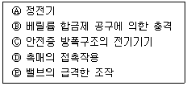
- Ⓐ, Ⓓ, Ⓔ
- Ⓐ, Ⓑ, Ⓒ
- Ⓐ, Ⓒ, Ⓓ
- Ⓑ, Ⓒ, Ⓔ
(정답률: 76%)
74. 산소, 아세틸렌, 수소 제조 시 품질검사의 실시 횟수로 옳은 것은?
- 매시간 마다
- 6시간에 1회 이상
- 1일 1회 이상
- 가스 제조 시 마다
(정답률: 76%)
75. 고압가스 냉동제조시설에서 냉동능력 2ton 이상의 냉동설비에 설치하는 압력계의 설치기준으로 틀린 것은?
- 압축기의 토출압력 및 흡입압력을 표시하는 압력계를 보기 쉬운 곳에 설치한다.
- 강제윤활방식인 경우에는 윤활압력을 표시하는 압력계를 설치한다.
- 강제윤활방식인 것은 윤활유 압력에 대한 보호장치가 설치되어 있는 경우 압력계를 설치한다.
- 발생기에는 냉매가스의 압력을 표시하는 압력계를 설치한다.
(정답률: 67%)
76. 고압가스일반제조의 시설에서 사업소 밖의 배관 매몰 설치 시 다른 매설물과의 최소 이격거리를 바르게 나타낸 것은?
- 배관은 그 외면으로부터 지하의 다른 시설물과 0.5m 이상
- 독성가스의 배관은 수도시설로부터 100m 이상
- 터널과는 5m 이상
- 건축물과는 1.5m 이상
(정답률: 58%)
77. 1일간 저장능력이 35000m3 인 일산화탄소 저장설비의 외면과 학교와는 몇 m 이상의 안전거리를 유지하여야 하는가?
- 17 m
- 18 m
- 24 m
- 27 m
(정답률: 48%)
78. 이동식 프로판 연소기용 용접용기에 액화석유가스를 충전하기 위한 압력 및 가스성분의 기준은? (단, 충전하는 가스의 압력은 40℃ 기준이다.)
- 1.52 MPa 이하, 프로판 90mol% 이상
- 1.53 MPa 이하, 프로판 90mol% 이상
- 1.52 MPa 이하, 프로판+프로필렌 90mol% 이상
- 1.53 MPa 이하, 프로판+프로필렌 90mol% 이상
(정답률: 42%)
79. 가연성 가스의 폭발범위가 적절하게 표기된 것은?
- 아세틸렌 : 2.5 ~ 81%
- 암모니아 : 16 ~ 35%
- 메탄 : 1.8 ~ 8.4%
- 프로판 : 2.1 ~ 11.0%
(정답률: 68%)
80. 충전질량 1000kg 이상인 LPG소형저장탱크 부근에 설치하여야 하는 분말소화기의 능력단위로 옳은 것은?
- BC용 B-10 이상
- BC용 B-12 이상
- ABC용 B-10 이상
- ABC용 B-12 이상
(정답률: 46%)
5과목: 가스계측기기
81. 스프링식 저울의 경우 측정하고자 하는 물체의 무게가 작용하여 스프링의 변위가 생기고 이에 따라 바늘의 변위가 생겨 지시하는 양으로 물체의 무게를 알 수 있다. 이와 같은 측정방법은?
- 편위법
- 영위법
- 치환법
- 보상법
(정답률: 74%)
82. 경사각이 30°인 경사관식 압력계의 눈금을 읽었더니 50cm 이었다. 이때 양단의 압력 차이는 약 몇 kgf/cm2 인가? (단, 비중이 0.8인 기름을 사용하였다.)
- 0.02
- 0.2
- 20
- 200
(정답률: 37%)
83. 유체의 운동방정식(베르누이의 원리)을 적용하는 유량계는?
- 오벌기어식
- 로터리베인식
- 터빈유량계
- 오리피스식
(정답률: 77%)
84. 천연가스의 성분이 메탄(CH4) 85%, 에탄(C2H6) 13%, 프로판(C3H8) 2%일 때 이 천연가스의 총발열량은 약 몇 kcal/m3 인가? (단, 조성은 용량 백분율이며, 각 성분에 대한 총발열량은 다음과 같다.)
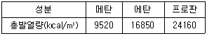
- 10766
- 12741
- 13215
- 14621
(정답률: 56%)
85. 검지가스와 누출 확인 시험지가 옳게 연결된 것은?
- 포스겐 - 하리슨씨시약
- 할로겐 - 염화제일구리착여미
- CO – KI 전분지
- H2S – 질산구리벤제니
(정답률: 72%)
86. 가스미터 설치장소 선정 시 유의사항으로 틀린 것은?
- 진동을 받지 않는 곳이어야 한다.
- 부착 및 교환 작업이 용이하여야 한다.
- 직사일광에 노출되지 않는 곳이어야 한다.
- 가능한 한 통풍이 잘되지 않는 곳이어야 한다.
(정답률: 81%)
87. 탄광 내에서 CH4 가스의 발생을 검출하는데 가장 적당한 방법은?
- 시험지법
- 검지관법
- 질량분석법
- 안전등형 가연성가스 검출법
(정답률: 71%)
88. 습도에 대한 설명으로 틀리 것은?
- 절대습도는 비습도라고도 하며 % 로 나타낸다.
- 상대습도는 현재의 온도 상태에서 포함할 수 있는 포화 수증기 최대량에 대한 현재 공기가 포함하고 있는 수증기의 량을 %로 표시한 것이다.
- 이슬점은 상대습도가 100% 일 때의 온도이며 노점온도라고도 한다.
- 포화공기는 더 이상 수분을 포함할 수 없는 상태의 공기이다.
(정답률: 57%)
89. 크로마토그래피에서 분리도를 2배로 증가시키기 위한 컬럼의 단수(N)은?
- 단수(N)를 √2배 증가시킨다.
- 단수(N)를 2배 증가시킨다.
- 단수(N)를 4배 증가시킨다.
- 단수(N)를 8배 증가시킨다.
(정답률: 56%)
90. 2차 지연형 계측기에서 제동비를
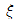
로 나타낼 때 대수감쇄율을 구하는 식은?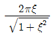
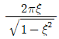
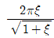
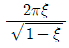
(정답률: 56%)
91. 가스크로마토그래피의 구성 장치가 아닌 것은?
- 분광부
- 유속조절기
- 컬럼
- 시료주입기
(정답률: 57%)
92. 선팽창계수가 다른 2종의 금속을 결합시켜 온도 변화에 따라 굽히는 정도가 다른 특성을 이용한 온도계는?(오류 신고가 접수된 문제입니다. 반드시 정답과 해설을 확인하시기 바랍니다.)
- 유리제 온도계
- 바이메탈 온도계
- 압력식 온도계
- 전기저항식 온도계
(정답률: 82%)
93. 다음 중 파라듐관 연소법과 관련이 없는 것은?
- 가스뷰렛
- 봉액
- 촉매
- 과염소산
(정답률: 51%)
94. 탄화수소 성분에 대하여 감도가 좋고, 노이즈가 적고 사용이 편리한 장점이 있는 가스 검출기는?
- 접촉연소식
- 반도체식
- 불꽃이온화식
- 검지관식
(정답률: 64%)
95. 유리제 온도계 중 모세관 상부에 보조 구부를 설치하고 사용온도에 따라 수은량을 조절하여 미세한 온도차의 측정이 가능한 것은?
- 수은 온도계
- 알코올 온도계
- 벡크만 온도계
- 유점 온도계
(정답률: 49%)
96. 적분동작이 좋은 결과를 얻을 수 있는 경우가 아닌 것은?
- 측정지연 및 조절지연이 작은 경우
- 제어대상이 자기평형성을 가진 경우
- 제어대상의 속응도(速應度)가 작은 경우
- 전달지연과 불감시간(不感時間)이 작은 경우
(정답률: 49%)
97. 초저온 영역에서 사용될 수 있는 온도계로 가장 적당한 것은?
- 광전관식 온도계
- 백금 측온 저항체 온도계
- 크로멜-알루멜 열전대 온도계
- 백금-백금·로듐 열전대 온도계
(정답률: 47%)
98. 막식 가스미터에서 가스가 미터를 통과하지 않는 고장은?
- 부동
- 불통
- 기차불량
- 감도불량
(정답률: 71%)
99. 가스미터의 크기 선정 시 1개의 가스기구가 가스미터의 최대 통과량의 80%를 초과한 경우의 조치로서 가장 옳은 것은?
- 1등급 큰 미터를 선정한다.
- 1등급 적은 미터를 선정한다.
- 상기 시 가스량 이상의 통과 능력을 가진 미터 중 최대의 미터를 선정한다.
- 상기 시 가스량 이상의 통과 능력을 가진 미터 중 최소의 미터를 선정한다.
(정답률: 53%)
100. 제어량이 목표값을 중심으로 일정한 폭의 상하 진동을 하게 되는 현상을 무엇이라고 하는가?
- 오프셋
- 오버슈트
- 오버잇
- 뱅뱅
(정답률: 68%)
구멍을 통과하는 유체의 부피유량 Q는 다음과 같다.
Q = Av
여기서 A는 구멍의 단면적, v는 유체의 속도이다. 유체의 속도는 구멍에서 떨어지는 물방울의 속도와 같다고 가정할 수 있다. 이 물방울의 속도는 자유낙하운동에서의 속도와 같으므로 다음과 같이 구할 수 있다.
v = sqrt(2gh)
여기서 h는 구멍에서 탱크 바닥까지의 높이이다. 따라서 구멍을 통과하는 유체의 부피유량은 다음과 같다.
Q = A * sqrt(2gh)
여기서 A는 구멍의 단면적이고, h는 10m - 5mm = 9.995m 이다. 따라서 유체의 부피유량은 다음과 같다.
Q = pi * (0.0⑤m)^2 * sqrt(2 * 9.8 m/s^2 * 9.995m) ≈ 0.0011 m^3/s
이제 유체의 부피유량과 구멍의 단면적을 이용하여 유체의 유속을 구할 수 있다.
v = Q / A ≈ 0.0011 m^3/s / (pi * (0.0⑤m)^2) ≈ 14 m/s
따라서 정답은 "14 m/s" 이다.